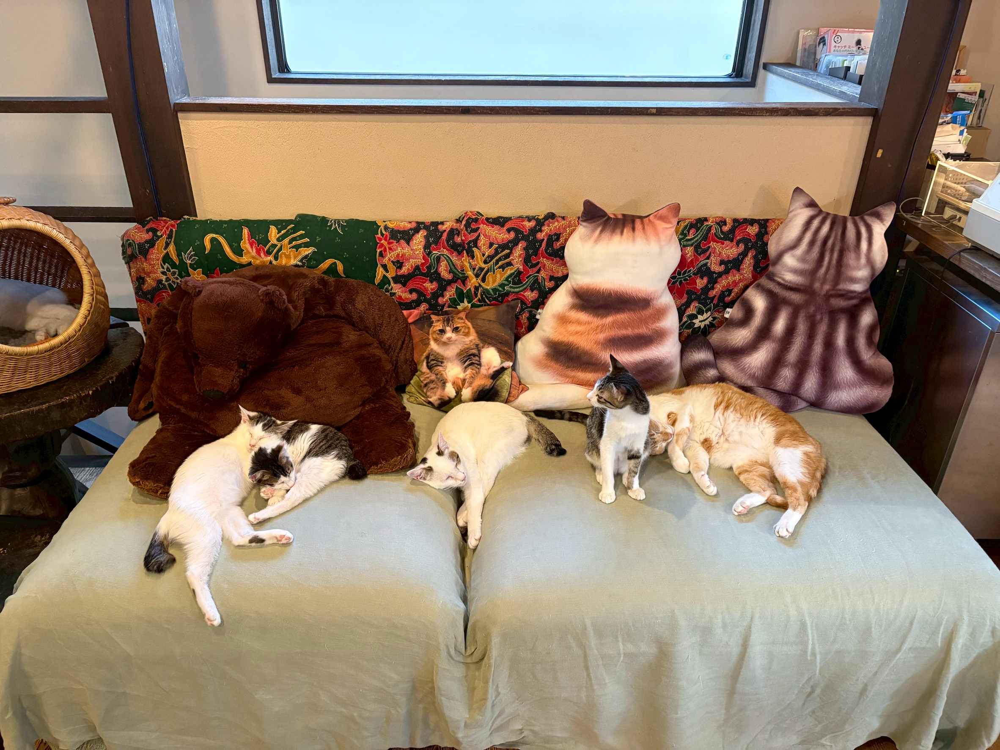

まずはご来店ください
保護猫譲渡を希望される方は、ご予約のあと来店時にスタッフへお声がけください。
①譲渡契約書の通読
②アンケートを済ませたら、面談をさせて頂きます。
Adoption
猫と人が長く安心して暮らせるご縁を大切にしています。
猫は長生きすれば20年以上生きる動物です。ご飯をあげる、糞尿の始末や掃除など毎日のお世話も大変ですし、病気やけがをすれば高額の医療費もかかります。
「猫を家族に迎え入れる」ということは、そうした手間や出費などのリスクをすべて引き受けることです。それをよく理解されたうえで、最後まで面倒が見られるかどうか、ご家族でよく話し合ってご検討ください。
鎌倉ねこの間からの譲渡は、神奈川県在住の方のみとさせていただきます。

Flow
鎌倉ねこの間では、お世話になっている動物病院に情報が寄せられた各種検査済みの保護猫をお預かりしています。少なくとも10匹は猫スタッフとして残ってもらいたいと考えています。
また、カフェの外の預かりボランティア宅にもたくさんの里親募集の猫たちがいます。こちらもご検討ください。カフェの外の里親募集
保護猫譲渡を希望される方は、ご予約のあと来店時にスタッフへお声がけください。
①譲渡契約書の通読
②アンケートを済ませたら、面談をさせて頂きます。
対面での面談を重視しており、メールやお電話でのお問い合わせのみで猫の譲渡を決めることはありません。ご家族構成、生活環境、猫との相性などを確認しながら進めます。
ご期待に添えない場合もございますのでご了承ください。
譲渡の際は、最低1回のワクチン接種、各種血液検査を済ませ、生後半年前後で不妊手術を済ませたあとに譲渡します。トライアルは必ずスタッフが該当猫をご自宅までお届けし2週間トライアル期間ののち、問題がなければ正式譲渡となります。
譲渡の際は、鎌倉ねこの間滞在中に該当猫にかかった医療費（各種検査・ワクチン接種・不妊手術など）と譲渡手数料（5,000円）をご負担いただいております。また、2018年12月よりペット保険への加入を条件としております。
鎌倉ねこの間でお預かりしているのは、保護猫たちです。それまでの経験から、なかなか懐かない子、手を出すと噛んだりひっかいたりする子もいます。これらをご理解いただいたうえで、お引取りいただきますようお願いいたします。
保護猫譲渡に関する誓約書の作成については、行政書士の福本健一氏にお力添えいただきました。万が一、譲渡後に問題が生じた場合は、福本氏に仲裁人として入っていただきます。
行政書士マルケン事務所所長
110-0016 東京都台東区台東４丁目３１番７－２０３号
070-6485-3993/090-1126-9432